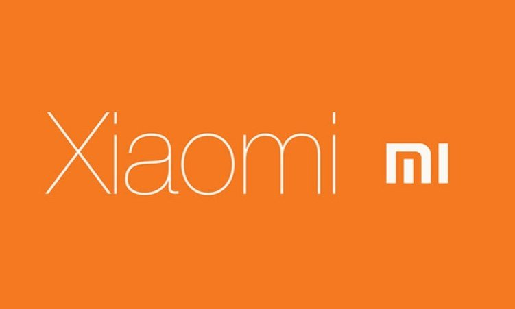

Компания Xiaomi
Компания Xiaomi начала свою деятельность в 2010 году с разработки Android-прошивки MIUI, после чего переключилась на создание электроники.
Xiaomi — компания уникальная и работает не так, как большинство китайских брендов электроники: есть подлинная философия дизайна, обеспечены высочайшие стандарты производства,
разработана своя оригинальная оболочка для Android и, конечно же, постоянно ведется разработка собственных топовых технологий и железа,
которые незамедлительно применяются в новейших гаджетах.
Ключевой ценностью компании стало то, что хорошие и высокотехнологичные устройства не должны стоить целое состояние.
И Xiaomi на деле воплощает эту ценность в соотношении высочайшего уровня качества продуктов с действительно невысокой ценой,
что практически сразу вывело молодую компанию по уровню продаж и популярности в один ряд с самыми известными мировыми производителями мобильных устройств.
Первый смартфон Mi 1 появился в 2011 году и превзошел многих конкурентов по своим характеристикам и цене, его оценило множество пользователей.
С тех пор компания Xiaomi набрала огромное количество фанатов и поклонников. В третьем квартале 2014 года Xiaomi выходит на третье место в мире по продажам смартфонов после Samsung и Apple.
С каждым годом компания расширяет свой ассортимент, выпуская новую продукцию учитывая рынок и пожелания своих пользователей, приобретая все большее количество фанатов.
На данный момент компания выпускает ряд моделей смартфонов, телевизоров, фитнес браслетов, внешних аккумуляторов и ряд других популярных устройств.
Характеристики смартфона Xiaomi Redmi 9C
| Тип корпуса | моноблок |
|---|---|
| Тип SIM-карты | нано-SIM |
| Операционная система | Android 10 |
| Дисплей | 6.53", IPS |
| Разрешение дисплея | 1600×720 |
| Процессор | MediaTek Helio G35, 2300МГц, 8-ми ядерный |
| Объем оперативной памяти | 3 ГБ |
| Объем встроенной памяти | 64 ГБ |
Если необходим телефон не только для звонков, но и для работы, то тогда вам отлично подойдет смартфон XIAOMI Redmi 9C 64Gb. Все ваши запросы и операции будут выполнены моментально благодаря операционной системе Android 10, а используя 4G, вы сможете скачивать и устанавливать приложения, смотреть фильмы онлайн. Если вы переживаете о том, что кто-то сможет увидеть ваши личные данные, то используйте сканер отпечатка пальца. Помимо этого, предусмотрено множество различных датчиков, которые существенно облегчат вам жизнь. Используя смартфон XIAOMI Redmi 9C 64Gb, вы сможете расплачиваться в магазинах без карт, прикладывая телефон, так как имеется модуль NFC. Высококачественные материалы, профессиональная сборка и современные технологии гарантируют длительный срок службы без поломок.
Достоинства телефонов компании Xiaomi:
- использование качественных комплектующих и материалов;
- внедрение новых разработок;
- применение собственной оболочки;
- невысокая цена;
- простота эксплуатации;
- привлекательный дизайн.
Фото